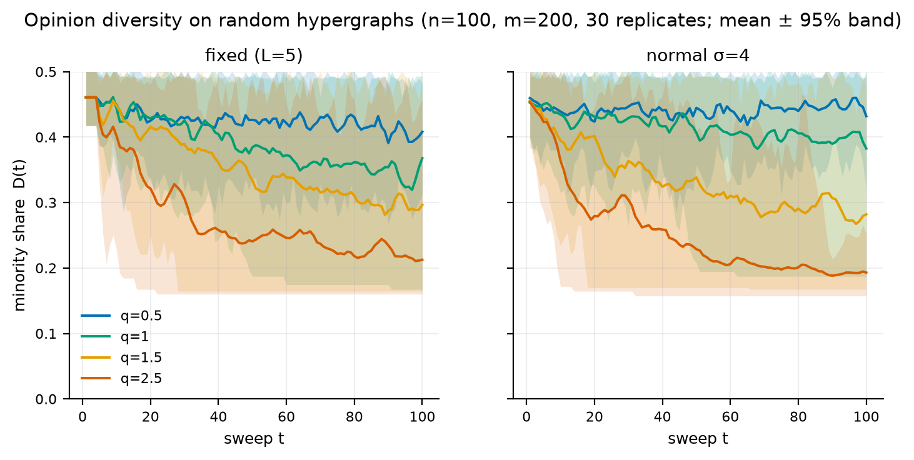

Hypergraph–Nonlinear–Latency Voter Model
Research repository · version 2.3.1
A tested reference implementation of the HNL voter model and a reproducible re-analysis of its claims: group interactions on hypergraphs, a nonlinear adoption exponent q, and heterogeneous reaction latencies.
Revised paperCorrected edition (PDF)
OriginalOriginal manuscript (PDF)
ModelFormal specification
EvidenceResults and claim ledger
ReproduceOne-command reproduction
The paper reports a reanalysis, not a new model. The nonlinearity result
holds: 80 % consensus is reached in none of the runs at q=0.5 and
in 87–100 % at q=2.5. The latency effect is small and conditional;
oscillations damp; and the Kaggle hashtag graph is too fragmented for a
population-level consensus experiment (none of 900 runs, largest final
majority 0.754).
